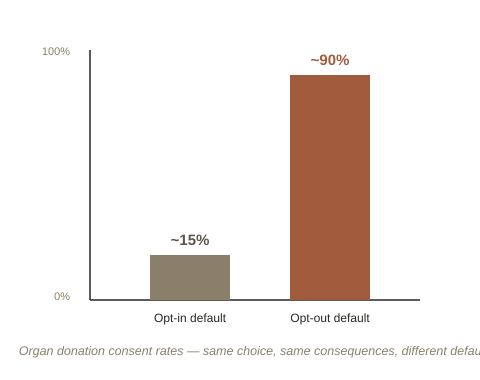

Chapter 5: Designing Around the Brain You Actually Have
Four chapters in, a pattern has built up. Losses are felt more sharply than gains (Chapter 1), so money gets sorted into protective mental buckets and defaults feel sticky (Chapter 2). Probability judgments get hijacked by vividness and resemblance rather than real statistics (Chapter 3). And the present self reliably overpowers the future self in any decision that trades short-term discomfort for long-term benefit (Chapter 4). None of this is random noise — it's remarkably consistent, predictable, and, as it turns out, buildable-with rather than only fightable-against.
Choice architecture: neutral presentation doesn't exist
Richard Thaler and legal scholar Cass Sunstein's book Nudge starts from a simple, almost unavoidable observation: any time a choice is presented to someone — a form, a menu, a signup page, a retirement plan — it has to be presented somehow, in some order, with some default already selected or not. There is no neutral, choice-free way to present a choice. Since some form of choice architecture (the deliberate or accidental design of how choices are presented) is unavoidable, Thaler and Sunstein's argument is that it should be designed deliberately and honestly, with people's actual (not idealized) decision-making patterns in mind — rather than left to accident, or worse, exploited.
Defaults: the payoff of Chapter 2's status quo bias
The clearest, most-studied lever is the default option. Because of status quo bias (Chapter 2), whatever option requires no action gets chosen dramatically more often than the actual merits of the alternatives would predict. Countries where organ donation is opt-out (you're a donor unless you actively say no) see donor consent rates around 90%; countries where it's opt-in (you're not a donor unless you actively say yes) see rates closer to 15% — same choice, same consequences, no coercion involved, purely a difference in which box starts checked. The same lever, applied to retirement savings, is one of the most successful policy nudges on record: automatic-enrollment 401(k) plans, where new employees are enrolled by default and must actively opt out, produce dramatically higher participation than opt-in plans offering the identical benefit.

Save More Tomorrow: using present bias to defeat present bias
The most elegant nudge in this space directly solves Chapter 4's problem, using Chapter 4's own mechanism as the tool. Thaler and economist Shlomo Benartzi designed a program called Save More Tomorrow: instead of asking employees to cut their current paycheck to save more (a painful, immediate, loss-averse "no" almost every time), employees are asked to commit today to automatically save a larger share of their future raises — a decision about a future, not-yet-felt paycheck, which present bias makes far easier to agree to in advance. Once the future raise actually arrives, the increased savings rate kicks in automatically, with no fresh painful decision required in the moment. Employers who adopted the program saw savings rates roughly triple over a few years, entirely through employees who had explicitly opted in ahead of time to a version of themselves they wouldn't have to argue with later.
Framing, applied on purpose
Chapter 1's framing effect — "90% survive" landing very differently from "10% die," despite being identical facts — gets used deliberately here too, most visibly in public health messaging, energy bills that compare a household's usage to their neighbors' (leaning on social comparison rather than raw numbers), and food labeling. None of this changes the underlying facts. It changes which facts are cognitively easiest to act on, given how people, not idealized rational agents, actually process information.
The honest tension: is this manipulation?
Thaler and Sunstein call their approach libertarian paternalism — "libertarian" because every nudge preserves the ability to choose differently (the opt-out is always genuinely available, just effortful), and "paternalism" because the design is explicitly steering people toward an outcome the designer believes serves them better. Critics push back hard on exactly this combination: once you accept that defaults are engineered to steer behavior, who decides which direction "better" points, and where's the line between a helpful nudge and a quietly manipulative one? Thaler and Sunstein's answer is that the alternative isn't a neutral system — it's just an accidental or exploitative one — so the honest choice isn't between architecture and no architecture, only between architecture designed carelessly, adversarially, or well.
That tension is a genuinely good place to end this five-chapter arc: behavioral economics didn't just catalog a list of separate quirks — loss aversion, mental accounting, heuristics, present bias — it built, chapter by chapter, into a coherent explanation of predictable human behavior, and then straight into the live, unresolved question of what should be done with that predictability once you have it.
Try this
Ideas for noticing or testing this in your own life.
- Notice a default that's currently working on you: find one recurring subscription, setting, or plan you're on purely because it was the default when you signed up — decide deliberately whether to keep it, rather than by default.
- Try designing one nudge on yourself: pick one Chapter 4 present-bias problem you have (saving, exercise, a habit) and design a Save-More-Tomorrow-style commitment for it — something your future self agrees to now, that takes effect automatically later without needing a fresh decision in the moment.
Worth pulling on?
A few loose threads from this chapter — if any of these genuinely grab you, that's a good sign of where to go next.
- The Ultimatum Game and fairness-driven "irrational" punishment — people burning their own money to punish an unfair offer — was flagged back in Chapter 1 as a separate thread: a whole additional layer of behavioral economics about social preferences, not just individual judgment errors, that these five chapters haven't touched yet. → A natural next chapter (or a related topic: Game Theory in Real Markets) if you want to keep going here.
- Critiques of nudging overlap directly with a question already raised elsewhere in the library. → Already in the library: Motivation and Self-Determination covers the autonomy side of this same tension — when does removing friction from a "better" choice start to undercut someone's sense of freely choosing it?